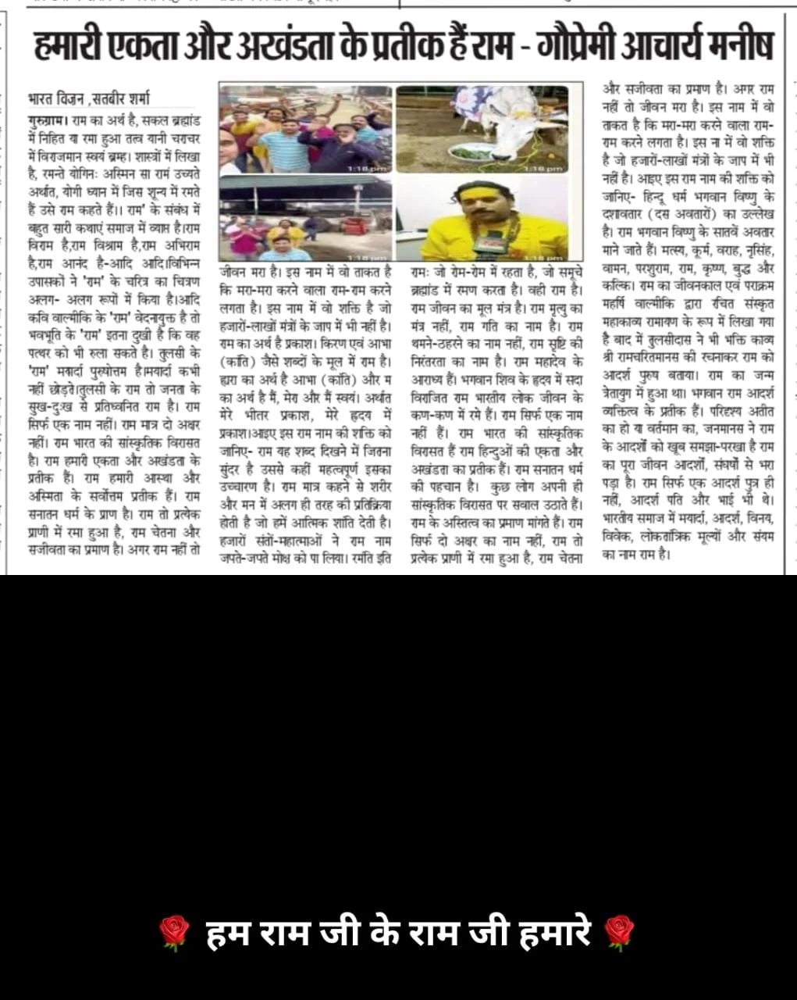
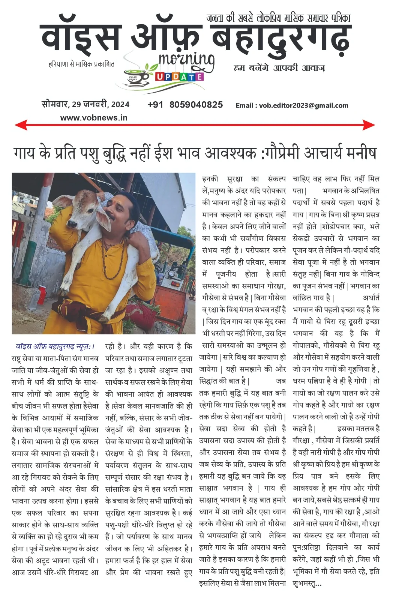
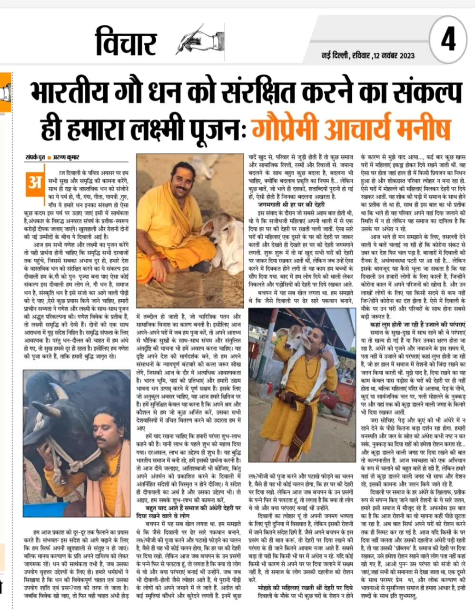

“धर्म, अर्थ, काम व मोक्ष का द्वार है गौमाता।”
In the Press
A message carried by the press.
For years, Hindi dailies across Haryana and Delhi have carried Acharya Ji's reflections on Gau Seva, Sanatan Sanskriti, and Indian tradition.

Selected Coverage
Words that found their way into print.
We are grateful to the journalists and publications that have shared this work with a wider audience. Below are excerpts from published coverage. Full articles remain the property of their respective publications.
Featured
“गाय हमारी संस्कृति, सनातन हमारे प्राण।”
A reflection on why Gau Mata sits at the centre of Indian culture — not as a symbol, but as a living relationship.
“गोसेवा राष्ट्र सेवा का सर्वश्रेष्ठ माध्यम।”
“भारतीय गौ धन को संरक्षित करने का संकल्प ही हमारा लक्ष्मी पूजन।”
“जन्म-जन्म का नाता है, गाय हमारी माता है।”
“गाय के प्रति पशु बुद्धि नहीं, ईश भाव आवश्यक।”
“गोसेवा केवल दान नहीं, जीवन जीने का मार्ग है।”
From the Archives
Pages we have kept.



Clippings are reproduced for reference. Copyright remains with the original publications. Headlines are quoted briefly for editorial commentary. Publication names and dates will be added after verification.
For Journalists
Media kit.
About the Pariwar
Shree Surbhi Kripa Pariwar is a devotee-led initiative based in Gurugram, Haryana. Inspired by Gopremi Acharya Manish Hari Ji, the Pariwar is devoted to the care of Gau Mata, the preservation of Sanatan Sanskriti, and service to the community.
Media contact
For interviews, photographs, or background, write to shreesurbhikripapariwar@gmail.com.
Media Enquiries
Writing about Gau Seva?
We are glad to help with context, quotes, and approved photographs.